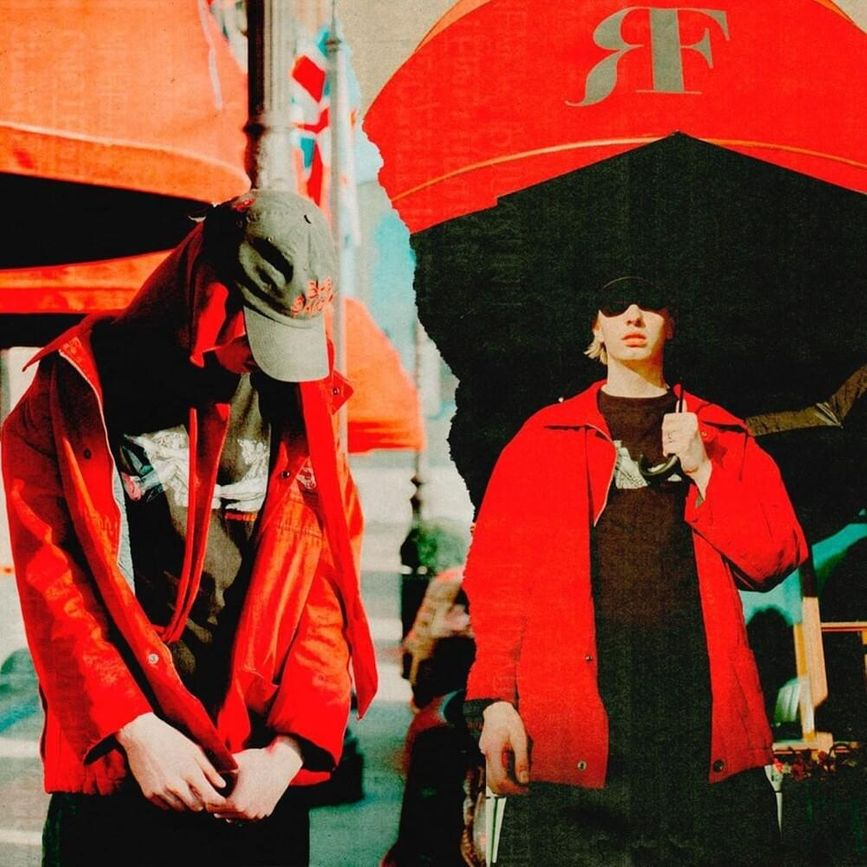
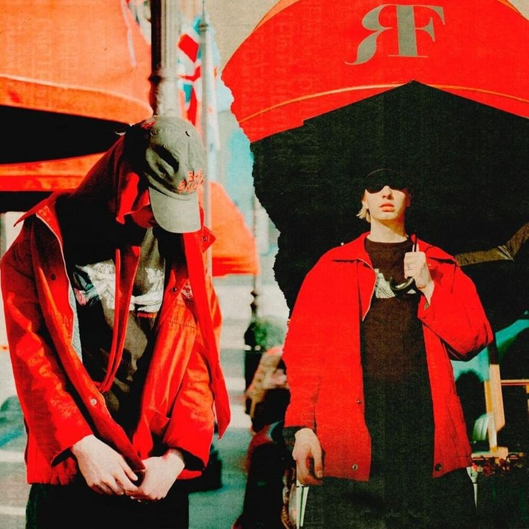
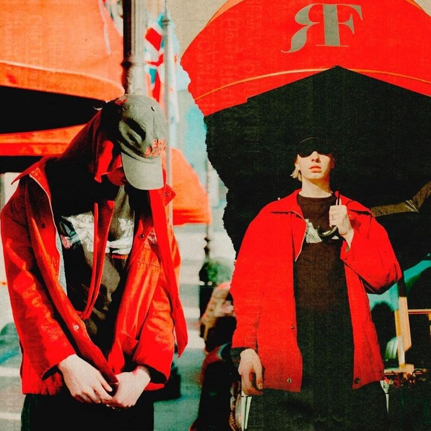

Mayot - Ghetto Garden

«GHETTO GARDEN» — Дебютный сольный альбом MAYOT, который смело можно назвать переломным для его карьеры исполнителя. Благодаря данному проекту, у Артёма есть все шансы закрепиться на вершине радаров музыкальной индустрии, ведь все составляющие для этого уже есть: качественно проработанная музыкальная составляющая, собственный отточенный годами стиль и совместные композиции с крупными исполнителями уже набравших большую аудиторию, среди которых OG Buda, FEDUK и THRILL PILL.
Ghetto Garden треклист:
С участием OG Buda
Спродюсировано Sqweezey
Текст написан Sqweezey, OG Buda & Mayot
С участием Bushido Zho & Seemee
Спродюсировано Sqweezey
Текст написан Mayot,Bushido Zho, Seemee & Sqweezey
Спродюсировано DooMee
Текст написан DooMee & Mayot
Спродюсировано Sqweezey & NastyBoy
Текст написан Sqweezey, NastyBoy & Mayot
С участием YungWay
Спродюсировано Pretty Scream
Текст написан Pretty Scream, YungWay & Mayot
С участием Feduk
Спродюсировано Pretty Scream
Текст написан Mayot,Feduk & Pretty Scream
Спродюсировано TonySouljah
Текст написан TonySouljah & Mayot
Спродюсировано DooMee
Текст написан DooMee & Mayot
С участием G BAN & SEEMEE
Спродюсировано Sqweezey
Текст написан Sqweezey, MAYOT, SEEMEE & G BAN
Спродюсировано TonySouljah & DooMee
Текст написан MAYOT, TonySouljah & DooMee
Текст написан MAYOT
С участием blago white, SEEMEE & THRILL PILL
Спродюсировано Flynno & VisaGangBeatz
Текст написан VisaGangBeatz, Flynno, FEDUK, MAYOT, blago white, SEEMEE & THRILL PILL
Спродюсировано Yung Paris
Текст написан Yung Paris & MAYOT
С участием OG Buda
Спродюсировано Sqweezey & Dvtchie
Текст написан Dvtchie, Sqweezey, MAYOT & OG Buda
С участием DooMee
Спродюсировано DooMee
Текст написан MAYOT & DooMee
Спродюсировано DooMee
Текст написан DooMee & MAYOT
Спродюсировано COBRA
Текст написан MAYOT & COBRA
Спродюсировано DooMee & TonySouljah
Текст написан TonySouljah, DooMee & MAYOT
С участием SEEMEE & 163ONMYNECK
Спродюсировано Yxng jayy
Текст написан Yxng jayy, MAYOT, 163ONMYNECK & SEEMEE